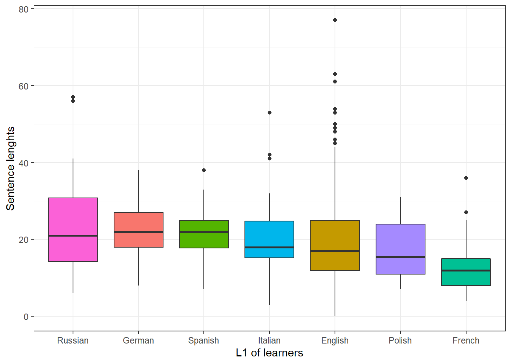
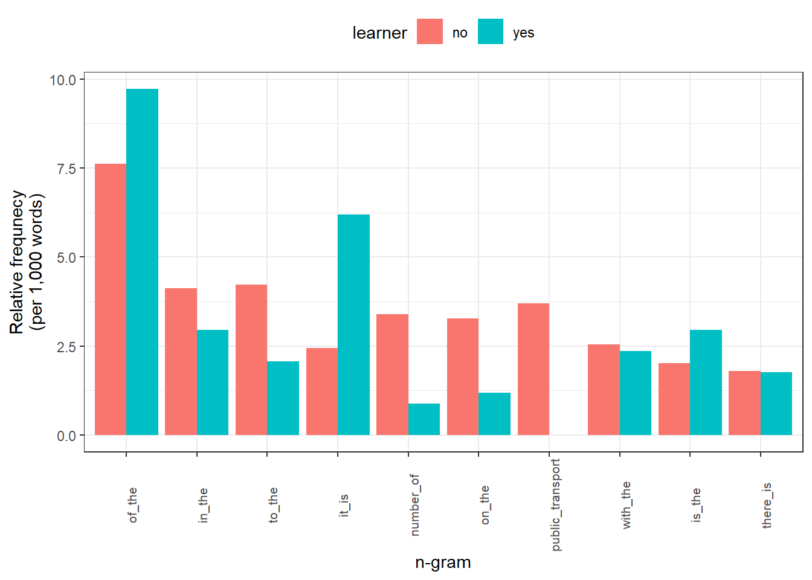
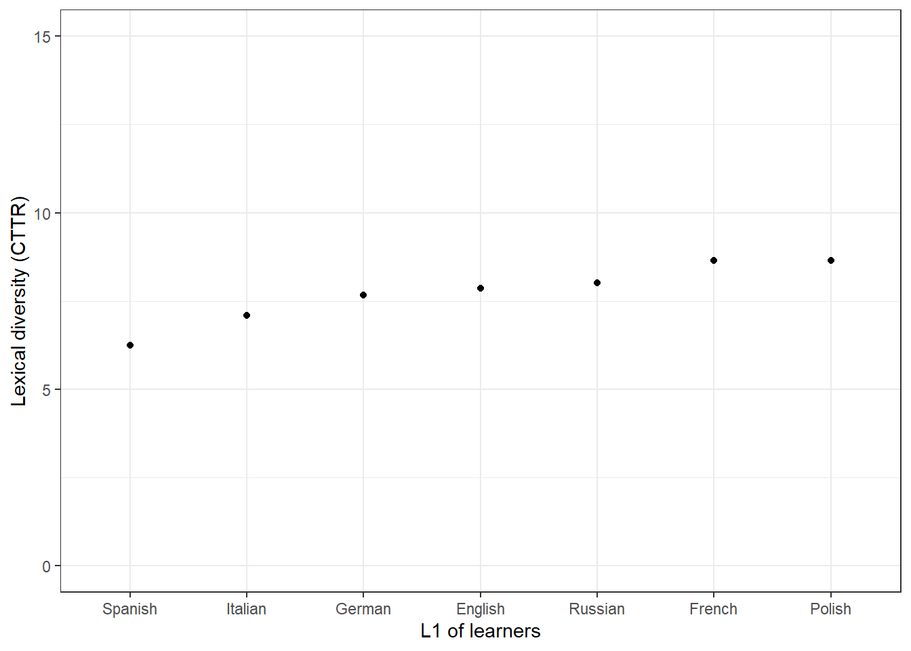
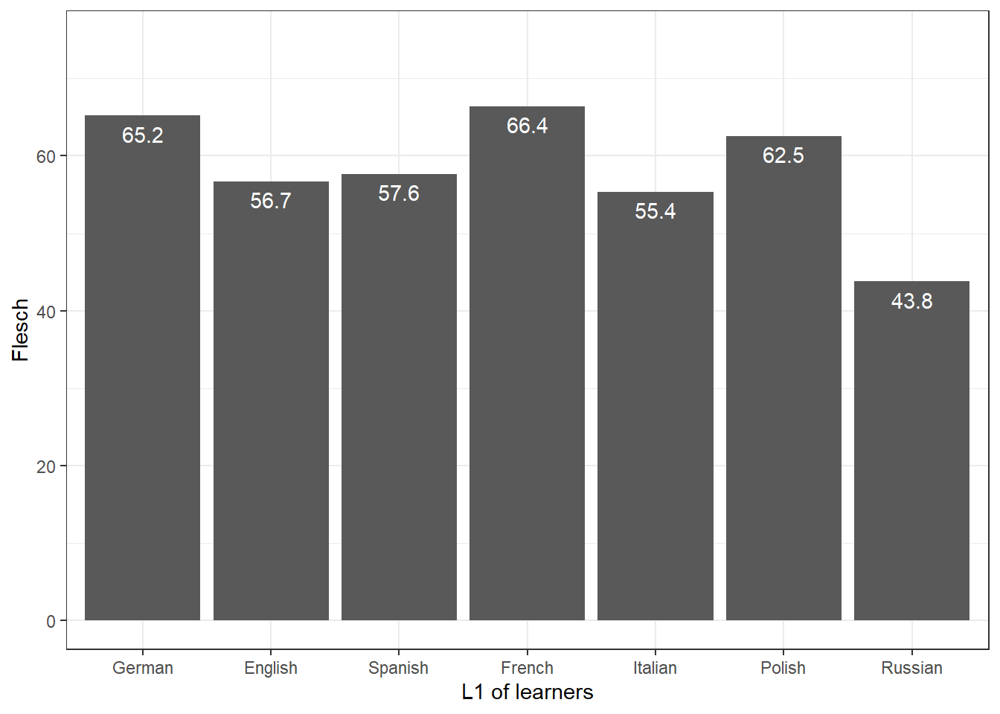

Analyzing learner language using R
Martin Schweinberger
2021-11-01

Introduction
This tutorial focuses on learner language and how to analyze differences between learners and L1 speakers of English using R. The entire R markdown document for this tutorial can be downloaded here.
The aim of this tutorial is to showcase how to extract information from essays from learners and L1 speakers of English and how to analyze these essays. The aim is not to provide a fully-fledged analysis but rather to show and exemplyfy some common methods for data extraction, processing, and analysis.
Preparation and session set up
This tutorial is based on R. If you have not installed R or are new to it, you will find an introduction to and more information how to use R here. For this tutorials, we need to install certain packages from an R library so that the scripts shown below are executed without errors. Before turning to the code below, please install the packages by running the code below this paragraph. If you have already installed the packages mentioned below, then you can skip ahead and ignore this section. To install the necessary packages, simply run the following code - it may take some time (between 1 and 5 minutes to install all of the packages so you do not need to worry if it takes some time).
# install packages
install.packages("quanteda")
install.packages("flextable")
install.packages("quanteda")
install.packages("tidyverse")
install.packages("tm")
install.packages("tidytext")
install.packages("tidyr")
install.packages("NLP")
install.packages("openNLP")
install.packages("openNLPdata")
install.packages("koRpus")
install.packages("stringi")
install.packages("pacman")
# install the language support package
koRpus::install.koRpus.lang("en")
# install klippy for copy-to-clipboard button in code chunks
remotes::install_github("rlesur/klippy")Now that we have installed the packages, we can activate them as shown below.
# set options
options(stringsAsFactors = F)
options(scipen = 999)
options(max.print=1000)
options(java.parameters = c("-XX:+UseConcMarkSweepGC", "-Xmx8192m"))
gc()## used (Mb) gc trigger (Mb) max used (Mb)
## Ncells 428574 22.9 902641 48.3 643711 34.4
## Vcells 788608 6.1 8388608 64.0 1650532 12.6# load packages
library(tidyverse)
library(flextable)
library(tm)
library(tidytext)
library(tidyr)
library(NLP)
library(openNLP)
library(quanteda)
library(quanteda.textstats)
library(koRpus)
library(koRpus.lang.en)
library(stringi)
library(pacman)
pacman::p_load_gh("trinker/entity")
# activate klippy for copy-to-clipboard button
klippy::klippy()Once you have installed R and RStudio and once you have also initiated the session by executing the code shown above, you are good to go.
Loading data
We use 7 essays written by learners from the International Corpus of Learner English (ICLE) and two files containing a-level essays written by L1-English British students from The Louvain Corpus of Native English Essays (LOCNESS) which was compiled by the Centre for English Corpus Linguistics (CECL), Université catholique de Louvain, Belgium. The code chunk below loads the data from the LADAL repository on GitHub into R.
# load essays from l1 speakers
ns1 <- base::readRDS(url("https://slcladal.github.io/data/LCorpus/ns1.rda", "rb"))
ns2 <- base::readRDS(url("https://slcladal.github.io/data/LCorpus/ns2.rda", "rb"))
# load essays from l2 speakers
es <- base::readRDS(url("https://slcladal.github.io/data/LCorpus/es.rda", "rb"))
de <- base::readRDS(url("https://slcladal.github.io/data/LCorpus/de.rda", "rb"))
fr <- base::readRDS(url("https://slcladal.github.io/data/LCorpus/fr.rda", "rb"))
it <- base::readRDS(url("https://slcladal.github.io/data/LCorpus/it.rda", "rb"))
pl <- base::readRDS(url("https://slcladal.github.io/data/LCorpus/pl.rda", "rb"))
ru <- base::readRDS(url("https://slcladal.github.io/data/LCorpus/ru.rda", "rb"))The table below shows the first 3 text elements from the essay written a Russian learner of English to provide an idea of what the data look like.
. |
It is now a very wide spread opinion, that in the modern world there is no place for dreaming and imagination. Those who share this point of view usually say that at present we are so very much under the domination of science, industry, technology, ever-increasing tempo of our lives and so on, that neither dreaming nor imagination can possibly survive. Their usual argument is very simple - they suggest to their opponents to look at some samples of the modern art and to compare them to the masterpieces of the "Old Masters" of painting, music, literature. |
As everything which is simple, the argument sounds very convincing. Of course, it is evident, that no modern writer, painter or musician can be compare to such names as Bach, Pushkin< Byron, Mozart, Rembrandt, Raffael et cetera. Modern pictures, in the majority of cases, seem to be merely repetitions or combinations of the images and methods of painting, invented very long before. The same is also true to modern verses, novels and songs. |
But, I think, those, who put forward this argument, play - if I may put it like this - not fair game with their opponents, because such an approach presupposes the firm conviction, that dreaming and imagination can deal only with Arts, moreover, only with this "well-established set" of Arts, which includes music, painting, architecture, sculpture and literature. That is, a person, who follows the above-mentioned point of view tries to make his opponent take for granted the statement, the evidence of which is, to say the least, doubtful. |
Now that we have loaded some data, we can go ahead and extract information from the texts and process the data to analyze differences between L1 speakers and learners of English.
Concordancing
Concordancing refers to the extraction of words or phrases from a given text or texts (Lindquist 2009). Commonly, concordances are displayed in the form of key-word in contexts (KWIC) where the search term is shown with some preceding and following context. Thus, such displays are referred to as key word in context concordances. A more elaborate tutorial on how to perform concordancing with R is available here.
Concordancing is helpful for seeing how a given term or phrased is used in the data, for inspecting how often a given word occurs in a text or a collection of texts, for extracting examples, and it also represents a basic procedure, and often the first step, in more sophisticated analyses.
We begin by creating KWIC displays of the term problem as shown below.
# combine data from l1 speakers
l1 <- c(ns1, ns2)
# combine data from learners
learner <- c(de, es, fr, it, pl, ru)
# extract kwic for term "problem" in learner data
kwic <- quanteda::kwic(pattern = "problem.*",
learner,
valuetype = "regex",
window = 10) %>%
as.data.frame()
# inspect
head(kwic)## docname from to pre
## 1 text12 8 8 Many of the drug addits have legal
## 2 text12 31 31 countries , like Spain , illegal . They have social
## 3 text30 11 11 In our society there is a growing concern about the
## 4 text33 108 108 that once the availability of guns has been removed the
## 5 text33 139 139 honest way and remove any causes that could worsen a
## 6 text34 54 54 violence in our society . In order to analise the
## keyword post pattern
## 1 problems because they steal money for buying the drug that is problem.*
## 2 problems too because people are afraid of them and the drug problem.*
## 3 problem of violent crime . In fact , particular attention is problem.*
## 4 problem of violence simply vanishes , but in this caotic situation problem.*
## 5 problem which is already particularly serious . problem.*
## 6 problem in its complexity and allow people to live in a problem.*The output shows that the term problem occurs six times in the learner data.
We can also arrange the output according to what comes before or after the search term as shown below.
# arrange kwic alphabetically by what comes after the key term
kwic %>%
dplyr::arrange(post)## docname from to pre
## 1 text12 8 8 Many of the drug addits have legal
## 2 text39 131 131 , greatest ideas were produced and solutions to many serious
## 3 text34 54 54 violence in our society . In order to analise the
## 4 text33 108 108 that once the availability of guns has been removed the
## 5 text30 11 11 In our society there is a growing concern about the
## 6 text12 31 31 countries , like Spain , illegal . They have social
## 7 text33 139 139 honest way and remove any causes that could worsen a
## keyword post
## 1 problems because they steal money for buying the drug that is
## 2 problems found . Most wonderful pieces of literature were created in
## 3 problem in its complexity and allow people to live in a
## 4 problem of violence simply vanishes , but in this caotic situation
## 5 problem of violent crime . In fact , particular attention is
## 6 problems too because people are afraid of them and the drug
## 7 problem which is already particularly serious .
## pattern
## 1 problem.*
## 2 problem.*
## 3 problem.*
## 4 problem.*
## 5 problem.*
## 6 problem.*
## 7 problem.*# arrange kwic alphabetically by what comes before the key term
kwic %>%
dplyr::mutate(prerev = stringi::stri_reverse(pre)) %>%
dplyr::arrange(prerev) %>%
dplyr::select(-prerev)## docname from to pre
## 1 text33 139 139 honest way and remove any causes that could worsen a
## 2 text33 108 108 that once the availability of guns has been removed the
## 3 text34 54 54 violence in our society . In order to analise the
## 4 text30 11 11 In our society there is a growing concern about the
## 5 text12 8 8 Many of the drug addits have legal
## 6 text12 31 31 countries , like Spain , illegal . They have social
## 7 text39 131 131 , greatest ideas were produced and solutions to many serious
## keyword post
## 1 problem which is already particularly serious .
## 2 problem of violence simply vanishes , but in this caotic situation
## 3 problem in its complexity and allow people to live in a
## 4 problem of violent crime . In fact , particular attention is
## 5 problems because they steal money for buying the drug that is
## 6 problems too because people are afraid of them and the drug
## 7 problems found . Most wonderful pieces of literature were created in
## pattern
## 1 problem.*
## 2 problem.*
## 3 problem.*
## 4 problem.*
## 5 problem.*
## 6 problem.*
## 7 problem.*We can also search for phrases rather than individual words. To do this, we need to use the phrase function in the pattern argument as shown below. In the code chunk below, we look for any combination of the word very and any following word. It we would wish, we could of course also sort (or order) the concordances as we have done above.
kwic <- quanteda::kwic(pattern = phrase("^very [a-z]{1,}"),
learner, valuetype = "regex") %>%
as.data.frame()docname | from | to | pre | keyword | post | pattern |
text3 | 193 | 194 | in black trousers and only | very seldom | in skirts , because she | ^very [a-z]{1,} |
text4 | 9 | 10 | is admirable is that she's | very active | in doing sports and that | ^very [a-z]{1,} |
text4 | 27 | 28 | managed by her in a | very simple | way . She's very interested | ^very [a-z]{1,} |
text4 | 32 | 33 | very simple way . She's | very interested | in cycling , swimming and | ^very [a-z]{1,} |
text5 | 3 | 4 | She's also | very intelligent | and because of that she | ^very [a-z]{1,} |
Splitting texts into sentences
It can be every useful to split texts into individual sentences. This can be done, e.g., to extract the average sentence length or simply to inspect or annotate individual sentences. To split a text into sentences, we clean the data by removing file identifiers and html tags as well as quotation marks within sentences. As we are dealing with several texts, we write a function that performs this task and that we can then apply to the individual texts.
cleanText <- function(x,...){
require(tokenizers)
# paste text together
x <- paste0(x)
# remove file identifiers
x <- stringr::str_remove_all(x, "<.*?>")
# remove quotation marks
x <- stringr::str_remove_all(x, fixed("\""))
# remove empty elements
x <- x[!x==""]
# split text into sentences
x <- tokenize_sentences(x)
x <- unlist(x)
}
# clean texts
ns1_sen <- cleanText(ns1)
ns2_sen <- cleanText(ns2)
de_sen <- cleanText(de)
es_sen <- cleanText(es)
fr_sen <- cleanText(fr)
it_sen <- cleanText(it)
pl_sen <- cleanText(pl)
ru_sen <- cleanText(ru). |
It is now a very wide spread opinion, that in the modern world there is no place for dreaming and imagination. |
Those who share this point of view usually say that at present we are so very much under the domination of science, industry, technology, ever-increasing tempo of our lives and so on, that neither dreaming nor imagination can possibly survive. |
Their usual argument is very simple - they suggest to their opponents to look at some samples of the modern art and to compare them to the masterpieces of the Old Masters of painting, music, literature. |
As everything which is simple, the argument sounds very convincing. |
Of course, it is evident, that no modern writer, painter or musician can be compare to such names as Bach, Pushkin< Byron, Mozart, Rembrandt, Raffael et cetera. |
Now that we have split the texts into individual sentences, we can easily extract and visualize the average sentence lengths of L1 speakers and learners of English.
Analyzing sentence length
The most basic complexity measure is average sentence length. In the following, we will extract the average sentence length for L1-speakers and learners of English with different language backgrounds.
In a first step, we write a function that extracts the sentence length for each individual sentence in the different texts. To check if the function works, we apply it to learner data from L1 Russian learners of English. The function first cleans the sentences that we extracted above and then splits the sentences into tokens by splitting whenever there is a white space. Finally, the function counts the number of elements resulting from the splitting process.
senLen <- function(x, ...){
sapply(x, function(x){
x <- stringr::str_remove_all(x, "[^[:alnum:] ]") %>%
stringr::str_squish() %>%
stringr::str_split(" ")
y <- sapply(x, function(y){
y <- length(y)
})
return(as.vector(y))
})
}
# apply function to text
senLen(ru_sen)[1:3]## It is now a very wide spread opinion, that in the modern world there is no place for dreaming and imagination.
## 21
## Those who share this point of view usually say that at present we are so very much under the domination of science, industry, technology, ever-increasing tempo of our lives and so on, that neither dreaming nor imagination can possibly survive.
## 40
## Their usual argument is very simple - they suggest to their opponents to look at some samples of the modern art and to compare them to the masterpieces of the Old Masters of painting, music, literature.
## 35We can now apply the function to all texts and generate a table (a data frame) of the results and add the L1 of the speaker who produced the sentence.
# extract sentences lengths
ns1_sl <- senLen(ns1_sen)
ns2_sl <- senLen(ns2_sen)
de_sl <- senLen(de_sen)
es_sl <- senLen(es_sen)
fr_sl <- senLen(fr_sen)
it_sl <- senLen(it_sen)
pl_sl <- senLen(pl_sen)
ru_sl <- senLen(ru_sen)
# create a data frame from the results
sl_df <- data.frame(c(ns1_sl, ns2_sl, de_sl, es_sl, fr_sl, it_sl, pl_sl, ru_sl)) %>%
dplyr::rename(sentenceLength = 1) %>%
dplyr::mutate(l1 = c(rep("en", length(ns1_sl)),
rep("en", length(ns2_sl)),
rep("de", length(de_sl)),
rep("es", length(es_sl)),
rep("fr", length(fr_sl)),
rep("it", length(it_sl)),
rep("pl", length(pl_sl)),
rep("ru", length(ru_sl))))sentenceLength | l1 |
2 | en |
17 | en |
23 | en |
17 | en |
20 | en |
34 | en |
Now, we can use the resulting table to create a box plot showing the results.
sl_df %>%
ggplot(aes(x = reorder(l1, -sentenceLength, mean), y = sentenceLength, fill = l1)) +
geom_boxplot() +
# adapt y-axis labels
labs(y = "Sentence lenghts") +
# adapt tick labels
scale_x_discrete("L1 of learners",
breaks = names(table(sl_df$l1)),
labels = c("en" = "English",
"de" = "German",
"es" = "Spanish",
"fr" = "French",
"it" = "Italian",
"pl" = "Polish",
"ru" = "Russian")) +
theme_bw() +
theme(legend.position = "none")
Extracting N-grams
In a next step, we extract n-grams using the tokens_ngrams function from the quanteda package. In a first step, we take the sentence data, convert it to lower case and remove punctuation. Then we apply the tokens_ngrams function to extract the n-grams (in this case 2-grams).
ns1_tok <- ns1_sen %>%
tolower() %>%
quanteda::tokens(remove_punct = TRUE)
# extract n-grams
ns1_2gram <- quanteda::tokens_ngrams(ns1_tok, n = 2)
# inspect
head(ns1_2gram[[2]], 10)## [1] "the_basic" "basic_dilema" "dilema_facing" "facing_the"
## [5] "the_uk's" "uk's_rail" "rail_and" "and_road"
## [9] "road_transport" "transport_system"We now apply the same procedure to all texts as shown below.
ns1_tok <- ns1_sen %>% tolower() %>% quanteda::tokens(remove_punct = TRUE)
ns2_tok <- ns2_sen %>% tolower() %>% quanteda::tokens(remove_punct = TRUE)
de_tok <- de_sen %>% tolower() %>% quanteda::tokens(remove_punct = TRUE)
es_tok <- es_sen %>% tolower() %>% quanteda::tokens(remove_punct = TRUE)
fr_tok <- fr_sen %>% tolower() %>% quanteda::tokens(remove_punct = TRUE)
it_tok <- it_sen %>% tolower() %>% quanteda::tokens(remove_punct = TRUE)
pl_tok <- pl_sen %>% tolower() %>% quanteda::tokens(remove_punct = TRUE)
ru_tok <- ru_sen %>% tolower() %>% quanteda::tokens(remove_punct = TRUE)
# extract n-grams
ns1_2gram <- as.vector(unlist(quanteda::tokens_ngrams(ns1_tok, n = 2)))
ns2_2gram <- as.vector(unlist(quanteda::tokens_ngrams(ns2_tok, n = 2)))
de_2gram <- as.vector(unlist(quanteda::tokens_ngrams(de_tok, n = 2)))
es_2gram <- as.vector(unlist(quanteda::tokens_ngrams(es_tok, n = 2)))
fr_2gram <- as.vector(unlist(quanteda::tokens_ngrams(fr_tok, n = 2)))
it_2gram <- as.vector(unlist(quanteda::tokens_ngrams(it_tok, n = 2)))
pl_2gram <- as.vector(unlist(quanteda::tokens_ngrams(pl_tok, n = 2)))
ru_2gram <- as.vector(unlist(quanteda::tokens_ngrams(ru_tok, n = 2)))Next, we generate a table with the ngrams and the L1 background of the speaker that produced the bi-grams.
ngram_df <- c(ns1_2gram, ns2_2gram, de_2gram, es_2gram,
fr_2gram, it_2gram, pl_2gram, ru_2gram) %>%
as.data.frame() %>%
dplyr::rename(ngram = 1) %>%
dplyr::mutate(l1 = c(rep("en", length(ns1_2gram)),
rep("en", length(ns2_2gram)),
rep("de", length(de_2gram)),
rep("es", length(es_2gram)),
rep("fr", length(fr_2gram)),
rep("it", length(it_2gram)),
rep("pl", length(pl_2gram)),
rep("ru", length(ru_2gram))),
learner = ifelse(l1 == "en", "no", "yes"))
# inspect
head(ngram_df)## ngram l1 learner
## 1 transport_01 en no
## 2 the_basic en no
## 3 basic_dilema en no
## 4 dilema_facing en no
## 5 facing_the en no
## 6 the_uk's en noNow, we process the table further to add frequency information, i.e., how often a given n-gram occurs in each the language of speakers with distinct L1 backgrounds.
ngram_fdf <- ngram_df %>%
dplyr::group_by(ngram, learner) %>%
dplyr::summarise(freq = n()) %>%
dplyr::arrange(-freq)
# inspect
head(ngram_fdf)## # A tibble: 6 x 3
## # Groups: ngram [5]
## ngram learner freq
## <chr> <chr> <int>
## 1 of_the no 72
## 2 to_the no 40
## 3 in_the no 39
## 4 public_transport no 35
## 5 of_the yes 33
## 6 number_of no 32As the word counts of the texts are quite different, we normalize the frequencies to per-1,000-word frequencies which are comparable across texts of different lengths.
ngram_nfdf <- ngram_fdf %>%
dplyr::group_by(ngram) %>%
dplyr::mutate(total_ngram = sum(freq)) %>%
dplyr::arrange(-total_ngram) %>%
# total by learner
dplyr::group_by(learner) %>%
dplyr::mutate(total_learner = sum(freq),
rfreq = freq/total_learner*1000)
# inspect
head(ngram_nfdf, 10)## # A tibble: 10 x 6
## # Groups: learner [2]
## ngram learner freq total_ngram total_learner rfreq
## <chr> <chr> <int> <int> <int> <dbl>
## 1 of_the no 72 105 9452 7.62
## 2 of_the yes 33 105 3395 9.72
## 3 in_the no 39 49 9452 4.13
## 4 in_the yes 10 49 3395 2.95
## 5 to_the no 40 47 9452 4.23
## 6 to_the yes 7 47 3395 2.06
## 7 it_is no 23 44 9452 2.43
## 8 it_is yes 21 44 3395 6.19
## 9 public_transport no 35 35 9452 3.70
## 10 number_of no 32 35 9452 3.39We now reformat the table so that we have relative frequencies for both learners and L1 speakers even if a particular n-gram does not occur in the text produced by either a learner or a L1 speaker.
ngram_rel <- ngram_nfdf %>%
dplyr::select(ngram, learner, rfreq, total_ngram) %>%
tidyr::spread(learner, rfreq) %>%
dplyr::mutate(no = ifelse(is.na(no), 0, no),
yes = ifelse(is.na(yes), 0, yes)) %>%
tidyr::gather(learner, rfreq, no:yes) %>%
dplyr::arrange(-total_ngram)
# inspect
head(ngram_rel)## # A tibble: 6 x 4
## ngram total_ngram learner rfreq
## <chr> <int> <chr> <dbl>
## 1 of_the 105 no 7.62
## 2 of_the 105 yes 9.72
## 3 in_the 49 no 4.13
## 4 in_the 49 yes 2.95
## 5 to_the 47 no 4.23
## 6 to_the 47 yes 2.06Finally, we visualize the most frequent n-grams in the data in a bar chart.
ngram_rel %>%
head(20) %>%
ggplot(aes(y = rfreq, x = reorder(ngram, -total_ngram), group = learner, fill = learner)) +
geom_bar(stat = "identity", position = position_dodge()) +
theme_bw() +
theme(axis.text.x = element_text(size=8, angle=90),
legend.position = "top") +
labs(y = "Relative frequnecy\n(per 1,000 words)", x = "n-gram")
Analyzing differences in ngram use
Next, we will set out to identify differences in ngram frequencies between learners and L1 speakers.
sdif_ngram <- ngram_fdf %>%
tidyr::spread(learner, freq) %>%
dplyr::mutate(no = ifelse(is.na(no), 0, no),
yes = ifelse(is.na(yes), 0, yes)) %>%
dplyr::rename(l1speaker = no,
learner = yes) %>%
dplyr::mutate(total_ngram = l1speaker+learner) %>%
dplyr::ungroup() %>%
dplyr::mutate(total_learner = sum(learner),
total_l1 = sum(l1speaker)) %>%
dplyr::mutate(a = l1speaker,
b = learner) %>%
dplyr::mutate(c = total_l1-a,
d = total_learner-b) %>%
# perform fishers exact test and extract estimate and p
dplyr::rowwise() %>%
dplyr::mutate(fisher_p = fisher.test(matrix(c(a,c,b,d), nrow= 2))$p.value,
fisher_est = fisher.test(matrix(c(a,c,b,d), nrow= 2))$estimate,
# calculate bonferroni correction
crit = .05/nrow(.),
sig_corr = ifelse(fisher_p < crit, "p<.05", "n.s."))# %>%
#dplyr::filter(sig_corr != "n.s.")
# inspect
head(sdif_ngram)## # A tibble: 6 x 14
## # Rowwise:
## ngram l1speaker learner total_ngram total_learner total_l1 a b c
## <chr> <dbl> <dbl> <dbl> <dbl> <dbl> <dbl> <dbl> <dbl>
## 1 -to_cr~ 1 0 1 3395 9452 1 0 9451
## 2 `_t 0 1 1 3395 9452 0 1 9452
## 3 £_1mil~ 1 0 1 3395 9452 1 0 9451
## 4 £_bill~ 1 0 1 3395 9452 1 0 9451
## 5 +_even 1 0 1 3395 9452 1 0 9451
## 6 +_peop~ 1 0 1 3395 9452 1 0 9451
## # ... with 5 more variables: d <dbl>, fisher_p <dbl>, fisher_est <dbl>,
## # crit <dbl>, sig_corr <chr>In our case, there are no n-grams that differ significantly in their use by learners and L1-speakers once we have corrected for repeated testing.
Part-of-speech tagging
Part-of-speech tagging is a vry useful procedure for many analyses. Here, we automatically identify parts of speech (word classes) in the text which, for a well-studied language like English, is approximately 95% accurate.
The code chunk below defines a function which applies this kind of tagging to any text fed into the function.
POStag <- function(x){
# load necessary packages
require("stringr")
require("NLP")
require("openNLP")
# define annotators
sent_token_annotator <- openNLP::Maxent_Sent_Token_Annotator()
word_token_annotator <- openNLP::Maxent_Word_Token_Annotator()
pos_tag_annotator <- openNLP::Maxent_POS_Tag_Annotator(language = "en", probs = FALSE)
# convert all file content to strings
strings <- lapply(x, function(x){
x <- as.String(x) })
# loop over file contents
sapply(strings, function(x){
a <- NLP::annotate(x, list(sent_token_annotator, word_token_annotator))
p <- NLP::annotate(x, pos_tag_annotator, a)
w <- subset(p, type == "word")
tags <- sapply(w$features, '[[', "POS")
as <- sprintf("%s/%s", x[w], tags)
at <- paste(as, collapse = " ")
return(at)
})
}We now apply this function to a test sentence to see if the function does what we want it to and to chck the output format.
# generate test text
text <- "It is now a very wide spread opinion, that in the modern world there is no place for dreaming and imagination."
# apply pos-tag function to test text
tagged_text <- POStag(text)
# inspect result
tagged_text## [1] "It/PRP is/VBZ now/RB a/DT very/RB wide/JJ spread/NN opinion/NN ,/, that/IN in/IN the/DT modern/JJ world/NN there/EX is/VBZ no/DT place/NN for/IN dreaming/VBG and/CC imagination/NN ./."The tags which you see here are from the tag set developed for the Penn Treebank, a corpus of English text with syntactic annotations. The tags are not always transparent, and this is very much the case for the word class we will be looking at - the tag for an adjective is /JJ!
The next step is to tag all our texts.
comText <- function(x,...){
# paste text together
x <- paste0(x)
# remove file identifiers
x <- stringr::str_remove_all(x, "<.*?>")
# remove quotation marks
x <- stringr::str_remove_all(x, fixed("\""))
# remove superfluous white spaces
x <- stringr::str_squish(x)
# remove empty elements
x <- x[!x==""]
}Now we apply the function to the texts, generate a corpus object from the texts and apply the pos-tagging function.
# combine texts
ns1_com <- comText(ns1)
ns2_com <- comText(ns2)
de_com <- comText(de)
es_com <- comText(es)
fr_com <- comText(fr)
it_com <- comText(it)
pl_com <- comText(pl)
ru_com <- comText(ru)Now we apply the function to the texts, generate a corpus object from the texts and apply the pos-tagging function.
# apply pos-tag function to data
ns1_pos <- as.vector(unlist(POStag(ns1_com)))
ns2_pos <- as.vector(unlist(POStag(ns2_com)))
de_pos <- as.vector(unlist(POStag(de_com)))
es_pos <- as.vector(unlist(POStag(es_com)))
fr_pos <- as.vector(unlist(POStag(fr_com)))
it_pos <- as.vector(unlist(POStag(it_com)))
pl_pos <- as.vector(unlist(POStag(pl_com)))
ru_pos <- as.vector(unlist(POStag(ru_com)))
# inspect
head(ns1_pos)## [1] "Transport/NNP 01/CD"
## [2] "The/DT basic/JJ dilema/NN facing/VBG the/DT UK/NNP 's/POS rail/NN and/CC road/NN transport/NN system/NN is/VBZ the/DT general/JJ rise/NN in/IN population/NN ./. This/DT leads/VBZ to/TO an/DT increase/NN in/IN the/DT number/NN of/IN commuters/NNS and/CC transport/NN users/NNS every/DT year/NN ,/, consequently/RB putting/VBG pressure/NN on/IN the/DT UKs/NNP transports/VBZ network/NN ./."
## [3] "The/DT biggest/JJS worry/NN to/TO the/DT system/NN is/VBZ the/DT rapid/JJ rise/NN of/IN car/NN users/NNS outside/IN the/DT major/JJ cities/NNS ./. Most/JJS large/JJ cities/NNS have/VBP managed/VBN to/TO incourage/VB commuters/NNS to/TO use/VB public/JJ transport/NN thus/RB decreasing/VBG major/JJ conjestion/NN in/IN Rush/NNP hour/NN periods/NNS ./."
## [4] "Public/NNP transport/NN is/VBZ the/DT obvious/JJ solution/NN to/TO to/TO the/DT increase/NN in/IN population/NN if/IN it/PRP is/VBZ made/VBN cheep/NN to/TO commuters/NNS ,/, clean/JJ ,/, easy/JJ and/CC efficient/JJ then/RB it/PRP could/MD take/VB the/DT strain/NN of/IN the/DT overloaded/VBN British/JJ roads/NNS ./."
## [5] "For/IN commuters/NNS who/WP regularly/RB travel/VBP long/JJ distances/NNS rail/NN transport/NN should/MD be/VB made/VBN more/RBR appealing/JJ ,/, more/RBR comfortable/JJ and/CC cheaper/JJR ./. Motorways/NNP and/CC other/JJ transport/NN links/NNS are/VBP constantly/RB being/VBG extended/VBN ,/, widened/VBN and/CC slowly/RB turning/VBG the/DT country/NN into/IN a/DT concrete/JJ jungle/NN yet/CC it/PRP is/VBZ only/RB trying/VBG to/TO cope/VB with/IN the/DT increase/NN in/IN traffic/NN ,/, we/PRP are/VBP our/PRP$ own/JJ enemy/NN !/."
## [6] "Another/DT major/JJ problem/NN created/VBN by/IN the/DT mass/NN of/IN vehicle/NN transport/NN is/VBZ the/DT pollution/NN emitted/VBN into/IN the/DT atmosphere/NN damaging/VBG the/DT ozone/NN layer/NN ,/, creating/VBG smog/NN and/CC forming/VBG acid/JJ rain/NN ./. Tourturing/VBG the/DT Earth/NN we/PRP are/VBP living/VBG on/IN ./."Next we get a frequency list from each of the tagged corpora, then we extract the adjectives from the data by subsetting the data frame using the grepl() function. This function returns TRUE or FALSE, so we only need to call the function as the conditional part of the subset() function.
Vocabulary size
We can now extract lexical diversity measures of the texts. In teh present case, we will extract
TTR: type-token ratioC: Herdan’s C (see J and Baayen (1998); sometimes referred to as LogTTR)R: Guiraud’s Root TTR (see J and Baayen (1998))CTTR: Carroll’s Corrected TTRU: Dugast’s Uber Index (see J and Baayen (1998))S: Summer’s indexMaas: Maas’ indices
Before we extract the lexical diversity measures, however, we split the data into individual essays.
cleanEss <- function(x){
x %>%
paste0(collapse = " ") %>%
stringr::str_split("Transport [0-9]{1,2}") %>%
unlist() %>%
stringr::str_squish() %>%
.[. != ""]
}
# apply function
ns1_ess <- cleanEss(ns1)
ns2_ess <- cleanEss(ns2)
de_ess <- cleanEss(de)
es_ess <- cleanEss(es)
fr_ess <- cleanEss(fr)
it_ess <- cleanEss(it)
pl_ess <- cleanEss(pl)
ru_ess <- cleanEss(ru)
# inspect
head(ns1_ess, 1)## [1] "The basic dilema facing the UK's rail and road transport system is the general rise in population. This leads to an increase in the number of commuters and transport users every year, consequently putting pressure on the UKs transports network. The biggest worry to the system is the rapid rise of car users outside the major cities. Most large cities have managed to incourage commuters to use public transport thus decreasing major conjestion in Rush hour periods. Public transport is the obvious solution to to the increase in population if it is made cheep to commuters, clean, easy and efficient then it could take the strain of the overloaded British roads. For commuters who regularly travel long distances rail transport should be made more appealing, more comfortable and cheaper. Motorways and other transport links are constantly being extended, widened and slowly turning the country into a concrete jungle yet it is only trying to cope with the increase in traffic, we are our own enemy! Another major problem created by the mass of vehicle transport is the pollution emitted into the atmosphere damaging the ozone layer, creating smog and forming acid rain. Tourturing the Earth we are living on. In concluding I wish to propose clean, efficient comfortable and cheap public transport for the near future."# extract lex. div. measures
ns1_lds <- lapply(ns1_ess, function(x){
x <- koRpus::lex.div(x, force.lang = 'en', # define language
segment = 20, # define segment width
window = 20, # define window width
quiet = T,
# define lex div measures
measure=c("TTR", "C", "R", "CTTR", "U", "Maas"),
char=c("TTR", "C", "R", "CTTR","U", "Maas"))
})## No TreeTagger command specified. Using tokenize() as fallback
## No TreeTagger command specified. Using tokenize() as fallback
## No TreeTagger command specified. Using tokenize() as fallback
## No TreeTagger command specified. Using tokenize() as fallback
## No TreeTagger command specified. Using tokenize() as fallback
## No TreeTagger command specified. Using tokenize() as fallback
## No TreeTagger command specified. Using tokenize() as fallback
## No TreeTagger command specified. Using tokenize() as fallback
## No TreeTagger command specified. Using tokenize() as fallback
## No TreeTagger command specified. Using tokenize() as fallback
## No TreeTagger command specified. Using tokenize() as fallback
## No TreeTagger command specified. Using tokenize() as fallback
## No TreeTagger command specified. Using tokenize() as fallback
## No TreeTagger command specified. Using tokenize() as fallback
## No TreeTagger command specified. Using tokenize() as fallback
## No TreeTagger command specified. Using tokenize() as fallback# inspect
ns1_lds[1]## [[1]]
##
## Total number of tokens: 217
## Total number of types: 134
##
## Type-Token Ratio
## TTR: 0.62
##
## TTR characteristics:
## Min. 1st Qu. Median Mean 3rd Qu. Max.
## 0.6140 0.6322 0.6429 0.6888 0.7129 0.9000
## SD
## 0.0852
##
##
## Herdan's C
## C: 0.91
##
## C characteristics:
## Min. 1st Qu. Median Mean 3rd Qu. Max.
## 0.8614 0.9059 0.9131 0.9157 0.9164 0.9648
## SD
## 0.0186
##
##
## Guiraud's R
## R: 9.1
##
## R characteristics:
## Min. 1st Qu. Median Mean 3rd Qu. Max.
## 1.789 5.459 6.484 6.596 8.158 9.080
## SD
## 1.8316
##
##
## Carroll's CTTR
## CTTR: 6.43
##
## CTTR characteristics:
## Min. 1st Qu. Median Mean 3rd Qu. Max.
## 1.265 3.860 4.585 4.664 5.769 6.420
## SD
## 1.2951
##
##
## Uber Index
## U: 26.08
##
## U characteristics:
## Min. 1st Qu. Median Mean 3rd Qu. Max.
## 5.041 21.104 22.588 23.564 26.226 36.992
## SD
## 4.5831
##
##
## Maas' Indices
## a: 0.2
## lgV0: 5.14
## lgeV0: 11.84
##
## Relative vocabulary growth (first half to full text)
## a: 0
## lgV0: 1.83
## V': 0 (0 new types every 100 tokens)
##
## Maas Indices characteristics:
## Min. 1st Qu. Median Mean 3rd Qu. Max.
## 0.1644 0.1953 0.2104 0.2112 0.2177 0.4454
## SD
## 0.0392
## Min. 1st Qu. Median Mean 3rd Qu. Max.
## 1.185 4.106 4.506 4.428 4.955 5.223
## SD
## 0.7145
## Min. 1st Qu. Median Mean 3rd Qu. Max.
## 2.729 9.455 10.376 10.196 11.410 12.026
## SD
## 1.6452##
## Note: Analysis was conducted case insensitive.We now go aheda and extract the lexical diversity scores for the other essays.
lexDiv <- function(x){
lapply(x, function(y){
koRpus::lex.div(y, force.lang = 'en', segment = 20, window = 20,
quiet = T, measure=c("TTR", "C", "R", "CTTR", "U", "Maas"),
char=c("TTR", "C", "R", "CTTR","U", "Maas"))
})
}
# extract lex. div. measures
ns2_lds <- lexDiv(ns2_ess)## No TreeTagger command specified. Using tokenize() as fallbackde_lds <- lexDiv(de_ess)## No TreeTagger command specified. Using tokenize() as fallbackes_lds <- lexDiv(es_ess)## No TreeTagger command specified. Using tokenize() as fallbackfr_lds <- lexDiv(fr_ess)## No TreeTagger command specified. Using tokenize() as fallbackit_lds <- lexDiv(it_ess)## No TreeTagger command specified. Using tokenize() as fallbackpl_lds <- lexDiv(pl_ess)## No TreeTagger command specified. Using tokenize() as fallbackru_lds <- lexDiv(ru_ess)## No TreeTagger command specified. Using tokenize() as fallbackInspect differences in lexical diversity across l1-backgrounds
cttr <- data.frame(c(as.vector(sapply(ns1_lds, '[', "CTTR")),
as.vector(sapply(ns2_lds, '[', "CTTR")),
as.vector(sapply(de_lds, '[', "CTTR")),
as.vector(sapply(es_lds, '[', "CTTR")),
as.vector(sapply(fr_lds, '[', "CTTR")),
as.vector(sapply(it_lds, '[', "CTTR")),
as.vector(sapply(pl_lds, '[', "CTTR")),
as.vector(sapply(ru_lds, '[', "CTTR"))),
c(rep("en", length(as.vector(sapply(ns1_lds, '[', "CTTR")))),
rep("en", length(as.vector(sapply(ns2_lds, '[', "CTTR")))),
rep("de", length(as.vector(sapply(de_lds, '[', "CTTR")))),
rep("es", length(as.vector(sapply(es_lds, '[', "CTTR")))),
rep("fr", length(as.vector(sapply(fr_lds, '[', "CTTR")))),
rep("it", length(as.vector(sapply(it_lds, '[', "CTTR")))),
rep("pl", length(as.vector(sapply(pl_lds, '[', "CTTR")))),
rep("ru", length(as.vector(sapply(ru_lds, '[', "CTTR")))))) %>%
dplyr::rename(CTTR = 1,
l1 = 2)
# inspect
head(cttr)## CTTR l1
## 1 6.43 en
## 2 8.84 en
## 3 8.20 en
## 4 8.34 en
## 5 7.34 en
## 6 8.78 encttr %>%
dplyr::group_by(l1) %>%
dplyr::summarise(CTTR = mean(CTTR)) %>%
ggplot(aes(x = reorder(l1, CTTR, mean), y = CTTR)) +
geom_point() +
# adapt y-axis labels
labs(y = "Lexical diversity (CTTR)") +
# adapt tick labels
scale_x_discrete("L1 of learners",
breaks = names(table(cttr$l1)),
labels = c("en" = "English",
"de" = "German",
"es" = "Spanish",
"fr" = "French",
"it" = "Italian",
"pl" = "Polish",
"ru" = "Russian")) +
theme_bw() +
coord_cartesian(ylim = c(0, 15)) +
theme(legend.position = "none")
Readability
ns1_read <- quanteda.textstats::textstat_readability(ns1_ess)
ns2_read <- quanteda.textstats::textstat_readability(ns2_ess)
de_read <- quanteda.textstats::textstat_readability(de_ess)
es_read <- quanteda.textstats::textstat_readability(es_ess)
fr_read <- quanteda.textstats::textstat_readability(fr_ess)
it_read <- quanteda.textstats::textstat_readability(it_ess)
pl_read <- quanteda.textstats::textstat_readability(pl_ess)
ru_read <- quanteda.textstats::textstat_readability(ru_ess)
# inspect
ns1_read## document Flesch
## 1 text1 43.12767
## 2 text2 62.34563
## 3 text3 63.16179
## 4 text4 62.90455
## 5 text5 53.53250
## 6 text6 56.92020
## 7 text7 53.89138
## 8 text8 59.28742
## 9 text9 62.26228
## 10 text10 53.60807
## 11 text11 58.24022
## 12 text12 58.36792
## 13 text13 55.85388
## 14 text14 48.55222
## 15 text15 55.41899
## 16 text16 62.98538Generate table
read <- rbind(ns1_read, ns2_read, de_read, es_read, fr_read, it_read, pl_read, ru_read) %>%
dplyr::mutate(l1 = c(rep("en", nrow(ns1_read)),
rep("en", nrow(ns2_read)),
rep("de", nrow(de_read)),
rep("es", nrow(es_read)),
rep("fr", nrow(fr_read)),
rep("it", nrow(it_read)),
rep("pl", nrow(pl_read)),
rep("ru", nrow(ru_read)))) %>%
dplyr::group_by(l1) %>%
dplyr::summarise(Flesch = mean(Flesch))
# inspect
head(read)## # A tibble: 6 x 2
## l1 Flesch
## <chr> <dbl>
## 1 de 65.2
## 2 en 56.7
## 3 es 57.6
## 4 fr 66.4
## 5 it 55.4
## 6 pl 62.5read %>%
ggplot(aes(x = l1, y = Flesch, label = round(Flesch, 1))) +
geom_bar(stat = "identity") +
geom_text(vjust=1.6, color = "white")+
# adapt tick labels
scale_x_discrete("L1 of learners",
breaks = names(table(read$l1)),
labels = c("en" = "English",
"de" = "German",
"es" = "Spanish",
"fr" = "French",
"it" = "Italian",
"pl" = "Polish",
"ru" = "Russian")) +
theme_bw() +
coord_cartesian(ylim = c(0, 75)) +
theme(legend.position = "none")
Citation & Session Info
Schweinberger, Martin. 2021. Analyzing learner language using R. Brisbane: The University of Queensland. url: https://slcladal.github.io/llr.html (Version 2021.11.01).
@manual{schweinberger2021llr,
author = {Schweinberger, Martin},
title = {Analyzing learner language using R},
note = {https://slcladal.github.io/pwr.html},
year = {2021},
organization = "The University of Queensland, Australia. School of Languages and Cultures},
address = {Brisbane},
edition = {2021.11.01}
}sessionInfo()## R version 4.1.1 (2021-08-10)
## Platform: x86_64-w64-mingw32/x64 (64-bit)
## Running under: Windows 10 x64 (build 19043)
##
## Matrix products: default
##
## locale:
## [1] LC_COLLATE=German_Germany.1252 LC_CTYPE=German_Germany.1252
## [3] LC_MONETARY=German_Germany.1252 LC_NUMERIC=C
## [5] LC_TIME=German_Germany.1252
##
## attached base packages:
## [1] stats graphics grDevices utils datasets methods base
##
## other attached packages:
## [1] tokenizers_0.2.1 entity_0.1.0
## [3] pacman_0.5.1 stringi_1.7.5
## [5] koRpus.lang.en_0.1-4 koRpus_0.13-8
## [7] sylly_0.1-6 quanteda.textstats_0.94.1
## [9] quanteda_3.1.0 openNLP_0.2-7
## [11] tidytext_0.3.2 tm_0.7-8
## [13] NLP_0.2-1 flextable_0.6.9
## [15] forcats_0.5.1 stringr_1.4.0
## [17] dplyr_1.0.7 purrr_0.3.4
## [19] readr_2.0.2 tidyr_1.1.4
## [21] tibble_3.1.5 ggplot2_3.3.5
## [23] tidyverse_1.3.1
##
## loaded via a namespace (and not attached):
## [1] fs_1.5.0 lubridate_1.8.0 httr_1.4.2
## [4] SnowballC_0.7.0 tools_4.1.1 backports_1.3.0
## [7] utf8_1.2.2 R6_2.5.1 DBI_1.1.1
## [10] colorspace_2.0-2 openNLPdata_1.5.3-4 withr_2.4.2
## [13] tidyselect_1.1.1 proxyC_0.2.2 compiler_4.1.1
## [16] cli_3.1.0 rvest_1.0.2 xml2_1.3.2
## [19] officer_0.4.0 labeling_0.4.2 slam_0.1-48
## [22] scales_1.1.1 systemfonts_1.0.3 digest_0.6.27
## [25] rmarkdown_2.5 base64enc_0.1-3 pkgconfig_2.0.3
## [28] htmltools_0.5.2 dbplyr_2.1.1 fastmap_1.1.0
## [31] highr_0.9 rlang_0.4.11 readxl_1.3.1
## [34] rstudioapi_0.13 farver_2.1.0 generics_0.1.1
## [37] jsonlite_1.7.2 zip_2.2.0 magrittr_2.0.1
## [40] Matrix_1.3-4 Rcpp_1.0.7 munsell_0.5.0
## [43] fansi_0.5.0 gdtools_0.2.3 lifecycle_1.0.1
## [46] yaml_2.2.1 grid_4.1.1 parallel_4.1.1
## [49] crayon_1.4.1 lattice_0.20-44 haven_2.4.3
## [52] hms_1.1.1 klippy_0.0.0.9500 knitr_1.36
## [55] pillar_1.6.4 uuid_1.0-2 stopwords_2.3
## [58] fastmatch_1.1-3 reprex_2.0.1.9000 glue_1.4.2
## [61] evaluate_0.14 data.table_1.14.2 RcppParallel_5.1.4
## [64] modelr_0.1.8 vctrs_0.3.8 tzdb_0.2.0
## [67] cellranger_1.1.0 gtable_0.3.0 assertthat_0.2.1
## [70] xfun_0.26 sylly.en_0.1-3 broom_0.7.9
## [73] janeaustenr_0.1.5 nsyllable_1.0 rJava_1.0-5
## [76] ellipsis_0.3.2References
J, Tweedie F, and R H Baayen. 1998. “How Variable May a Constant Be? Measures of Lexical Richness in Perspective.” Computers and the Humanities 32 (5): 323–52.
Lindquist, Hans. 2009. Corpus Linguistics and the Description of English. Edinburgh: Edinburgh University Press.